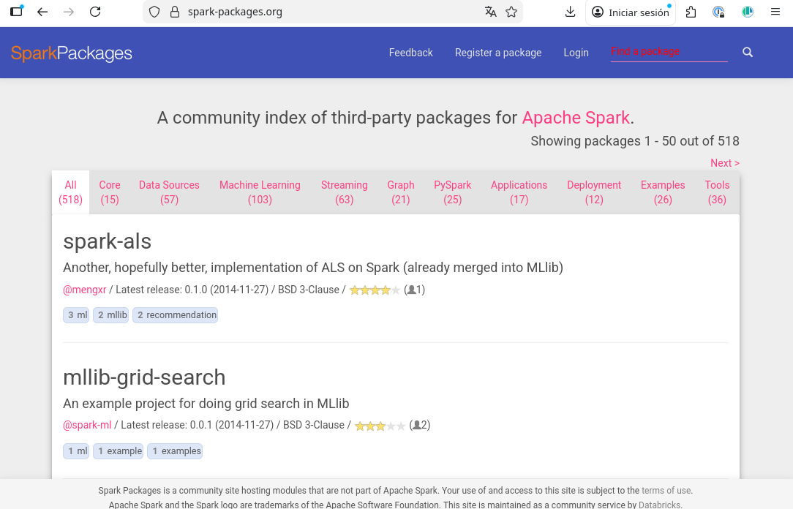

Arquitectura y propósito de Spark
INTRODUCCIÓN
Apache Spark es un motor de procesamiento de datos de código abierto diseñado para el procesamiento rápido y eficiente de grandes volúmenes de datos. Fue desarrollado inicialmente en la Universidad de California, Berkeley, y se ha convertido en una de las herramientas más populares en el ecosistema de Big Data.
La arquitectura de Spark se basa en un modelo de programación distribuida que permite procesar datos en paralelo a través de un clúster de computadoras. Spark utiliza un enfoque de procesamiento en memoria, lo que significa que los datos se cargan en la memoria RAM para acelerar las operaciones, lo que lo hace especialmente adecuado para tareas que requieren iteraciones repetidas sobre los mismos datos, como el aprendizaje automático y el análisis interactivo.
El propósito principal de Spark es proporcionar una plataforma unificada para el procesamiento de datos a gran escala, permitiendo a los desarrolladores escribir aplicaciones que pueden ejecutarse tanto en entornos locales como en clústeres distribuidos. Spark es compatible con una amplia variedad de fuentes de datos, incluyendo HDFS, Cassandra, HBase y S3, lo que lo hace versátil para diferentes casos de uso en el ámbito del Big Data.
En esta primera lección vamos a entrar en detalle en la historia, la arquitectura, el funcionamiento y los principales componentes de Spark.
CONTENIDOS
Un poco de historia
El comienzo de Apache Spark fue en la Universidad de Berkley, en 2009. En ese año se publicó el proyecto de investigación de Spark: "Spark: Cluster Computing with Working Sets".
¿Qué es Apache Spark?
Tal como se define en el libro de referencia de la asignatura, "Spark The Definitive Guide" de Bill Chambers y Matei Aharia, Apache spark is a unified computing engine and a set of libraries for parallel data processing on computer cluster. Partimos de esa definición para esclarecer los conceptos básicos que nos encontraremos durante el Módulo 2 y Módulo 3 de la asignatura de Infraestructuras computacionales para procesamiento de datos Masivos
Unified computer engineEn primer lugar, Spark es un motor de computación unificado, lo que significa que proporciona una plataforma única para realizar diversas tareas de procesamiento de datos. Entre otros: procesamiento por lotes, conexión con APIs, procesamiento en tiempo real, análisis de grafos y aprendizaje automático. Spark nos permite a los desarrolladores escribir aplicaciones que pueden manejar diferentes tipos de trabajo sin necesidad de cambiar a diferentes herramientas o plataformas.
Más allá de la teoría, en la práctica esta característica permite desde un único punto, extraer diversas fuentes de datos, transformar la información a través de sus múltiples librerias y conectarse con repositorios externos de información.
Set of librariesSpark está disponible con una gran colección de librerias específicas que le permiten trabajar en tecnologías diversas como, SQL, Dataframes, generación de gráfos, streaming.
Citando de nuevo a B. Chamber y M. Aharia: "The Spark core engine itself has changed little since it was first released, but the libraries have grown to provide more an more types of funcionality"
En el portal de paquetes spark se puede encontrar una amplia colección de librerias externas disponibles

Figura 1: Repositorio de paquetes y librerías externas disponibles en el ecosistema de Spark
Parallel Data processingSpark está diseñado para procesar grandes volúmenes de datos de manera eficiente utilizando la computación paralela. Esto significa que puede dividir las tareas de procesamiento en partes más pequeñas y ejecutarlas simultáneamente en un clúster de computadoras, lo que acelera significativamente el tiempo de procesamiento.
Computer clusterSpark permite ejecución desde un simple portátil hasta complejo cluster de servidores, lo que permite aprovechar la capacidad de procesamiento de múltiples máquinas para manejar grandes conjuntos de datos sin perder la versatilidad de ser ejecutado en cualquier ordenador. Esto es especialmente útil en entornos de big data, donde los volúmenes de datos pueden ser demasiado grandes para ser procesados en una sola máquina.
Spark utiliza un enfoque de procesamiento en memoria, lo que significa que los datos se cargan en la memoria RAM para acelerar las operaciones, lo que lo hace especialmente adecuado para tareas que requieren iteraciones repetidas sobre los mismos datos, como el aprendizaje automático y el análisis interactivo.
Componentes principales de Apache Spark
Los componentes principales de Apache Spark incluyen:
- Spark Core: Es el motor de procesamiento subyacente que proporciona las funcionalidades básicas de Spark, como la gestión de memoria, la planificación de tareas y la comunicación entre nodos.
- Spark SQL: Permite trabajar con datos estructurados utilizando SQL y DataFrames, proporcionando una interfaz fácil de usar para consultas y análisis de datos.
- Spark Streaming: Permite el procesamiento en tiempo real de flujos de datos, lo que es útil para aplicaciones como análisis de logs, monitoreo en tiempo real y detección de fraudes.
- Spark MLlib: Es una biblioteca de aprendizaje automático que proporciona algoritmos y herramientas para construir modelos predictivos y realizar análisis avanzados.
- Spark GraphX: Permite el procesamiento y análisis de grafos, lo que es útil para aplicaciones como redes sociales, recomendaciones y análisis de relaciones.